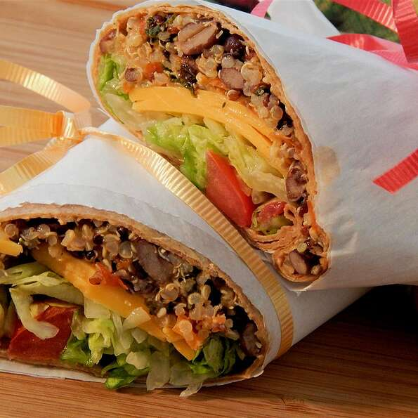

Southwest Roll-Ups

Description
A roll is a small, usually round or oblong individual loaf of bread served as a meal accompaniment (eaten plain or with butter).Rolls can be served and eaten whole or are also commonly cut and filled – the result of doing so is considered a sandwich in American English; in British English (and some other national varieties of English, such as Australian), the word sandwich is defined more narrowly, to require bread sliced from a loaf, and hence a cut-and-filled bread roll is not a sandwich; it is commonly called simply a roll.
Ingredients
- 2 cups water
- 1 cup quinoa
- 1 can black beans
- 1 red bell pepper
- ½ cup fresh spinach leaves
- 2 tablespoons barbeque sauce
- 1 tablespoon chopped garlic
- 1 pinch ground cumin
- 1 pinch cayenne pepper
- ¼ cup shredded Cheddar cheese
- 4 flour tortillas
Steps
- Bring water and quinoa to a boil in a saucepan. Reduce heat to medium-low, cover, and simmer until quinoa is tender and water has been absorbed, 15 to 20 minutes.
- While quinoa cooks, mix black beans, red bell pepper, spinach, barbeque sauce, garlic, cumin, and cayenne pepper together in a saucepan over medium heat. Stir in Cheddar cheese and cook, stirring occasionally, until the cheese is completely melted, 5 to 10 minutes. Remove from heat and stir in cooked quinoa.
- Place tortillas on a flat work surface. Spoon filling in a line across the middle of each tortilla; fold in opposing edges to overlap the filling. Roll up as you would burritos.